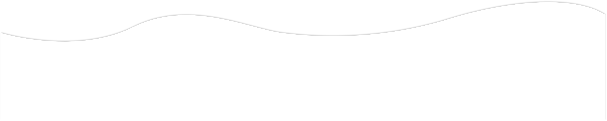

Ce site a été créé par Charles Mangin, Julien Ferré, et Floran Marchal, étudiants au DUT MMI de Montbéliard
Ce projet a été réalisé dans le cadre d’un exercice pédagogique au département MMI de Montbéliard
Tous droits de reproduction et de diffusion réservés © 2021
